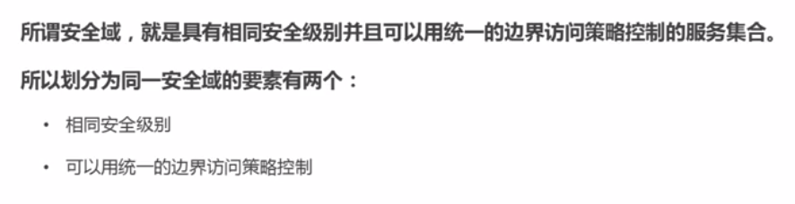

ThinkPHP框架代码审计
Python安全编程
互联网企业安全建设
一、企业安全建设之安全平台搭建
A.基础安全建设
1.安全区域划分


2.典型的安全域划分

3.典型传统中企业安全区域划分

4.业务服务器区

- 1）Redis数据库配置不当入侵


- 2）平时白名单，出事少背锅
5.内部服务区域

6.测试开发区域

7.堡垒机

- 1）作用


8.Linux主机OS层面加固


9.windows主机OS层面加固


10.总结

11.未来趋势

B.搭建开源SIEM平台
1.SIEM系统
 2.开源SIEM
2.开源SIEM


3.数据源

4.简化后的系统架构

5.生产环境优化

C.搭建大规模WAF集群
1.WAF

 2.常见部署模式：
2.常见部署模式：- 1）反向代理

3.Nginx+lua原理

4.lua可以检测的http内容


5.常见的WAF绕过技术

D.自建准入系统
1.准入系统


2.架构

3.主机检查策略

二、企业安全建设之数据安全
A.数据防泄漏
1.核心数据资产

2.数据防泄露的协议栈

3.设备级防护

4.文件加密

5.网络级防护


6.应用防护

7.桌面虚拟化


8.githup监控

B.主机端数据库审计
1.数据库安全

2.常见入侵方式


3.纵深防御体系


4.开源解决方案


5.常见的审计策略


C.网络层数据库审计
1.基于流量的数据库审计

2.MySQL Sinffer


3.开源数据库防火墙DBProxy


三、企业安全建设之漏洞扫描器与蜜罐
A.漏洞扫描器（上）
1.系统架构


2.资产管理

3.安全联系人

4.产品线表

5.IP资产

6.域名资产

7.URL资产

8.扫描模块


B.漏洞扫描器（下）
1.扫描器


2.常见Web扫描器衡量标准

C.蜜罐
1.蜜罐


四、互联网企业安全工作推动与实施从0到1
A.互联网企业安全工作推动与实施从0到1
1.互联网企业安全高级指南